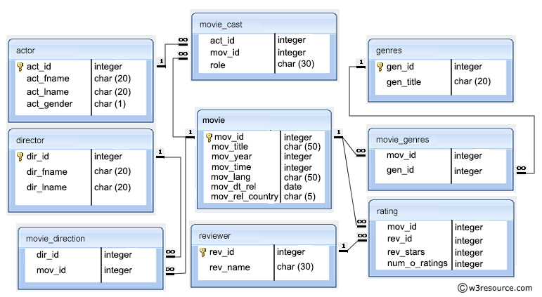

To display my knowledge of SQL in a clear and coherent manner I have decide
to use the below database for my representational SQL sub query.

My query with explanation
Below Is my Query I wrote to as mentioned above, break down this information into sections,
depending on what I would like to be displayed.
I decided I would create a query to help me pick a film I would like to see.
So first of all I would need a row that contained the basic information about
the actors and the film they starred in.
To insure the correct information was displayed I firstly needed to use the SELECT
keyword (allows you to tell the programme which columns you want) alongside the
FROM keyword(telling the programme which table said row is in ).
As you can see the information I would like displayed is spread out across many
tables within the database. This is where the INNER JOIN keyword comes into play ,
INNER JOIN allows you to join selected column from one table to another, as long a
they share a common attribute and are related. In this case I wanted the actors
name and the role they played in said movie , as well as the movie’s language,
release date and genre. To do this I would need to join four tables , I decided
to start of first with the actor’s info. I found this information all within the
actor table, so I added the columns I would like from that table to my query,
using its column name , spelt exactly. You will notice I am using the AS keyword
a lot . this allows you to set an alias to the column name so it is more readable
and easier to understand , for example you will see that act_id is now displayed as
Actor
ID . You will also notice that these aliases have been added to the front of some of the
column
names (a.act_id for example) this is required as it tells the programme which table said
column has
come from. I then acquired the relevant movie information from the movie cast,
movie,movie genres and
genres table again by using the INNER JOIN keyword. Now my table contained the
information I needed
to decide what movie I wanted to watch. I first needed to insure the movie was in
English, to do this
I used the WHERE keyword. This is a conditional statement which allows you to set not
only conditions
but a parameter range to the results that are shown in your table. Now that I had a list
of all the
movies that are in English I then decided to narrow the size of the table considerably,
to only include
movies which are in my favourite genres. To achieve this I needed to use the AND
keyword, this allows
more than one condition to be set to your results. You will notice that I have chosen to
have more
than one genre included in the results, I used the OR keyword to have more than one
genre specified
in the conditional statement. Now I had the movies from my favourite genres displayed, I
decided I wanted to watch the newest one out of the three. To do this I simply used the
ORDER BY keyword and set it to m.mov_dt_rel DESC;, this takes the movie date and sets
the latest release to the top of the table.